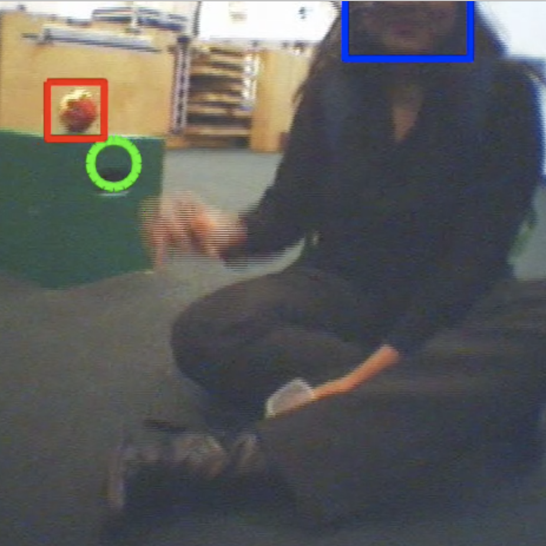
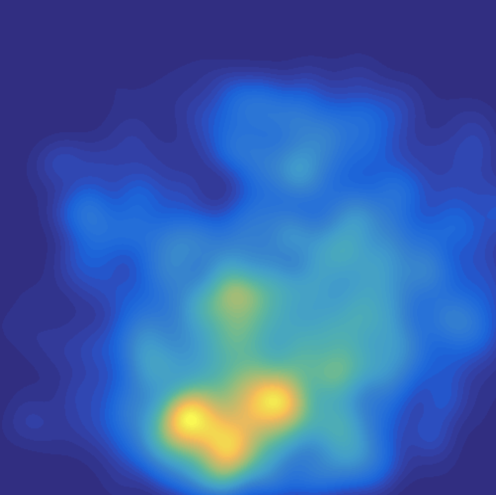
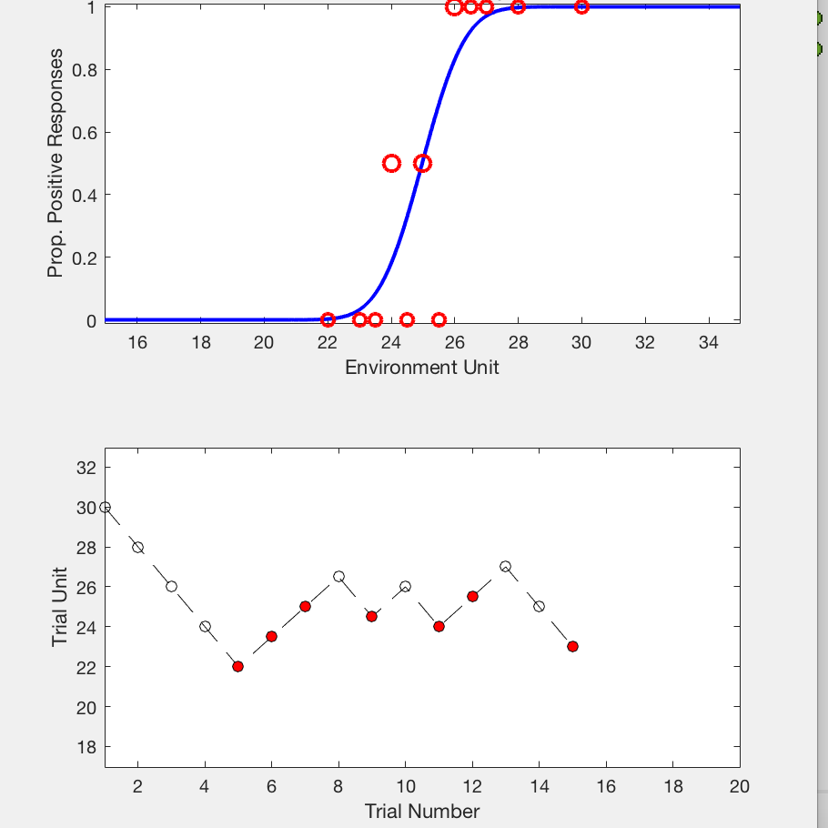

ROI Coder
The ROI Coder is a Matlab coding/annotation package for defining dynamic regions of interest for eye tracking studies (head-mounted or remote). An intuitive user interface makes coding efficient and quick to learn.
Github project page
Eye Tracking Tools
Matlab functions for importing and visualizing head-mounted eye tracking data (tailored to the Positive Science system). Includes code for generating heatmap density plots as seen in the image.
Github project page
Escalator Toolbox
The Escalator Toolbox is a collection of Matlab functions designed for perception-action researchers to run data collections and process the resulting data. Additional functionality lets users simulate data collections to test trial procedures prospectively and explore how trial procedures affect the resulting data.
Github project page